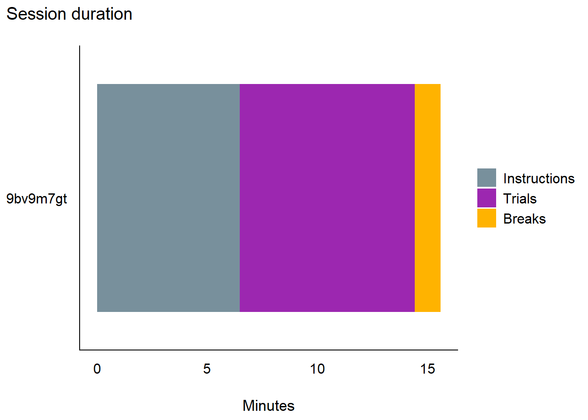
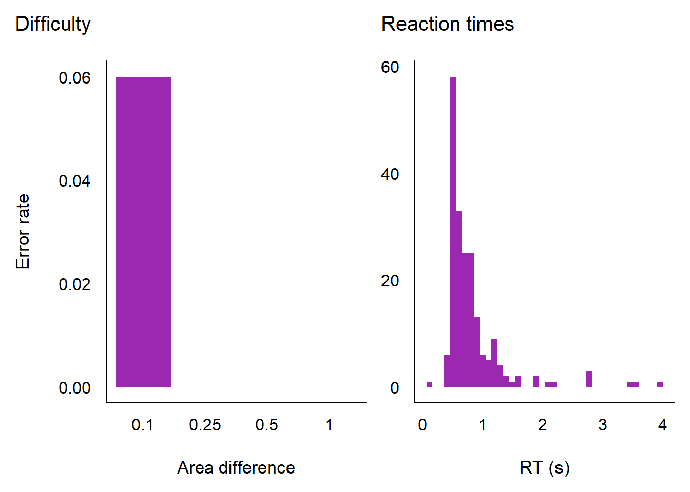
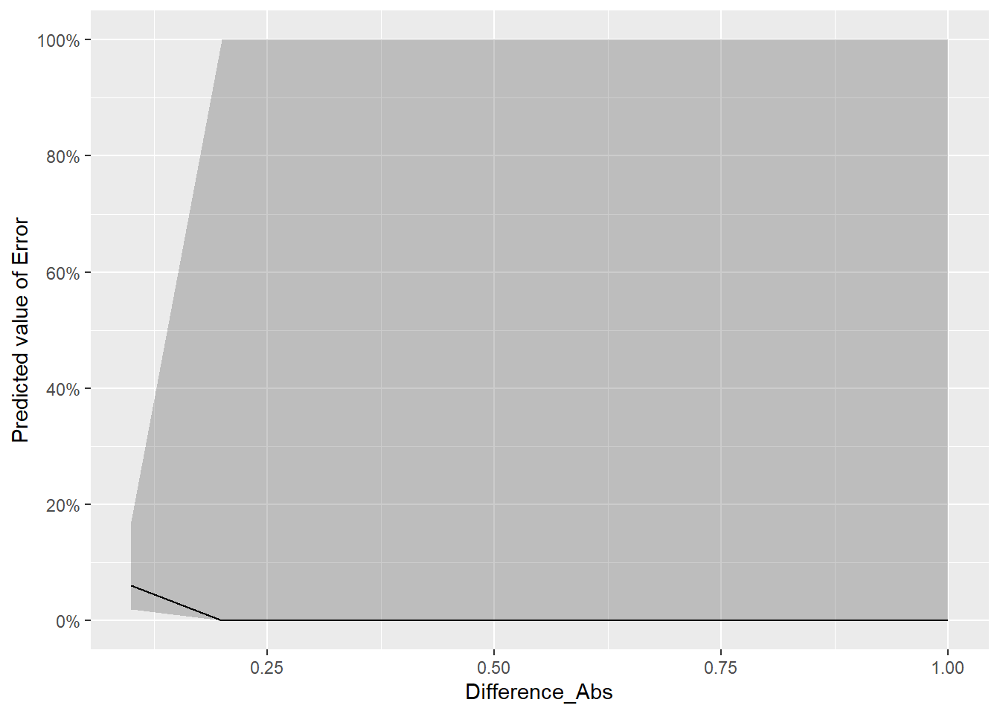

Code
library(jsonlite)
library(tidyverse)
library(easystats)
library(patchwork)library(jsonlite)
library(tidyverse)
library(easystats)
library(patchwork)Each session of the task (IllusionGame/chromostereopsis/) is downloaded as one JSON container with session, demographics, design and trials. Every trial carries the full Pyllusion parameter dictionary it was rendered from, so the design does not have to be reconstructed here - it is read off the trials.
path <- "../data/pilots"The only awkward entries are the colours, which are RGB triplets rather than scalars; they are collapsed to "r,g,b" strings, as the task’s own CSV export does. null (the size_panel “fill” level, and the tap coordinates of keyboard responses) becomes NA.
# One JSON entry -> one value fit for a dataframe column
as_column <- function(x) {
if (is.null(x) || length(x) == 0) return(NA)
if (length(x) > 1) return(paste(unlist(x), collapse = ",")) # RGB triplets
x[[1]]
}
read_session <- function(file) {
d <- jsonlite::fromJSON(file, simplifyVector = FALSE)
# One row per trial: the trial-level fields, then the parameter dictionary
trials <- map(d$trials, function(trial) {
fields <- trial[setdiff(names(trial), "parameters")]
as_tibble(map(c(fields, trial$parameters), as_column))
}) |>
list_rbind()
# Session and demographics are constant within a file, so repeat them on every row
meta <- c(map(d$session, as_column), map(d$demographics, as_column))
trials |> mutate(!!!meta, .before = 1)
}files <- list.files(path, pattern = "\\.json$", full.names = TRUE)
data <- map(files, read_session) |>
list_rbind() |>
mutate(
Participant = participant_id,
# The judged attribute. `Difference` is the signed area difference, positive = left
# disc is larger; its magnitude is task difficulty and its sign the correct answer.
Difference_Abs = abs(Difference),
Difference_Side = if_else(Difference > 0, "Left", "Right"),
# The illusion. The sign of `Illusion_Strength` says which panel holds the
# red-leaning disc (>= 0 is left), its magnitude the chromatic separation.
Illusion_Strength_Abs = abs(Illusion_Strength),
Red_Side = case_when(
Illusion_Strength > 0 ~ "Left",
Illusion_Strength < 0 ~ "Right",
.default = "None" # both panels are the same purple
),
# Response
Response = str_remove(response, "Arrow"),
Response_Left = Response == "Left",
Error = !correct,
RT = rt / 1000,
ISI = isi / 1000,
# Screened stimulus factors, as factors
across(c(Size, Gap, Density, Dither_Size), \(x) factor(x), .names = "{.col}_f"),
Equiluminant = as.logical(Equiluminant),
Size_Panel_Mode = factor(Size_Panel_Mode, levels = c("fill", "match")),
# Recorded but uncontrolled moderators
age = as.numeric(age)
)Did the files load as expected, and is the task doing what the design says?
data |>
summarise(
Trials = n(),
Sets = n_distinct(set),
Blocks = n_distinct(block),
Accuracy = mean(correct),
RT_median = median(RT),
# ISO 8601 with a "Z": as.POSIXct() silently keeps only the date, ymd_hms() does not
Duration_min = as.numeric(difftime(ymd_hms(end_time[1]), ymd_hms(start_time[1]), units = "mins")),
.by = Participant
) |>
display()| Participant | Trials | Sets | Blocks | Accuracy | RT_median | Duration_min |
|---|---|---|---|---|---|---|
| 9bv9m7gt | 200 | 10 | 4 | 0.98 | 0.66 | 15.59 |
Design balance. The difficulty x strength grid is crossed exactly, so every cell should appear once per set - i.e. n_sets times:
data |>
count(Illusion_Strength, Difference_Abs) |>
pivot_wider(names_from = Difference_Abs, values_from = n, names_sort = TRUE) |>
display()| Illusion_Strength | 0.1 | 0.25 | 0.5 | 1 |
|---|---|---|---|---|
| -1.00 | 10 | 10 | 10 | 10 |
| -0.50 | 10 | 10 | 10 | 10 |
| 0.00 | 10 | 10 | 10 | 10 |
| 0.50 | 10 | 10 | 10 | 10 |
| 1.00 | 10 | 10 | 10 | 10 |
The sign of the difference is balanced within each strength level, so these should be close to half and half rather than exact:
data |>
count(Illusion_Strength, Difference_Side) |>
pivot_wider(names_from = Difference_Side, values_from = n) |>
display()| Illusion_Strength | Left | Right |
|---|---|---|
| -1.00 | 20 | 20 |
| -0.50 | 20 | 20 |
| 0.00 | 20 | 20 |
| 0.50 | 20 | 20 |
| 1.00 | 20 | 20 |
The screened factors are assigned by balanced randomisation, so each level should be close to equally frequent (exactly so for the two-level ones):
map(
c("Size", "Gap", "Density", "Dither_Size", "Equiluminant", "Size_Panel_Mode"),
\(f) {
data |>
count(.data[[f]]) |>
rename(Level = 1) |>
mutate(Factor = f, Level = as.character(Level), .before = 1)
}
) |>
list_rbind() |>
display()| Factor | Level | n |
|---|---|---|
| Size | 0.25 | 69 |
| Size | 0.5 | 66 |
| Size | 0.75 | 65 |
| Gap | 0 | 65 |
| Gap | 0.02 | 67 |
| Gap | 0.06 | 68 |
| Density | 0.5 | 69 |
| Density | 0.75 | 64 |
| Density | 1 | 67 |
| Dither_Size | 2 | 66 |
| Dither_Size | 4 | 68 |
| Dither_Size | 8 | 66 |
| Equiluminant | FALSE | 100 |
| Equiluminant | TRUE | 100 |
| Size_Panel_Mode | fill | 100 |
| Size_Panel_Mode | match | 100 |
How long the task actually takes, which is what the session length (n_sets) has to be set against. Two clocks are logged and they line up: start_time / end_time are wall clock (ISO, UTC), while stimulus_onset is performance.now(), i.e. milliseconds since the page loaded. Since the page loads at start_time, the two can be combined to split the session into its parts:
Residual is the check on that arithmetic: instructions + trials + breaks should recover the wall-clock total, and does to within a second (the end_time timestamp is taken just after the final response).
durations <- data |>
arrange(Participant, order) |>
mutate(
trial_end = stimulus_onset + rt, # ms since page load
gap = (stimulus_onset - lag(trial_end)) / 1000,
after_break = block != lag(block, default = first(block)),
.by = Participant
) |>
summarise(
Trials = n(),
Total = as.numeric(difftime(ymd_hms(end_time[1]), ymd_hms(start_time[1]), units = "mins")),
Instructions = first(stimulus_onset) / 60000,
Breaks = sum(gap[after_break], na.rm = TRUE) / 60,
Task = (last(trial_end) - first(stimulus_onset)) / 60000,
.by = Participant
) |>
mutate(
Trials_time = Task - Breaks,
Sec_per_trial = Trials_time * 60 / Trials,
Residual = (Total - Instructions - Trials_time - Breaks) * 60
)
durations |>
select(Participant, Trials, Total, Instructions, Trials_time, Breaks, Sec_per_trial, Residual) |>
display()| Participant | Trials | Total | Instructions | Trials_time | Breaks | Sec_per_trial | Residual |
|---|---|---|---|---|---|---|---|
| 9bv9m7gt | 200 | 15.59 | 6.49 | 7.92 | 1.17 | 2.38 | 0.51 |
durations |>
summarise(across(
c(Total, Instructions, Trials_time, Breaks, Sec_per_trial),
list(mean = mean, min = min, max = max)
)) |>
pivot_longer(everything(), names_to = c("Part", "Stat"), names_pattern = "(.*)_(mean|min|max)") |>
pivot_wider(names_from = Stat, values_from = value) |>
display()| Part | mean | min | max |
|---|---|---|---|
| Total | 15.59 | 15.59 | 15.59 |
| Instructions | 6.49 | 6.49 | 6.49 |
| Trials_time | 7.92 | 7.92 | 7.92 |
| Breaks | 1.17 | 1.17 | 1.17 |
| Sec_per_trial | 2.38 | 2.38 | 2.38 |
Composition of each session:
durations |>
select(Participant, Instructions, Trials_time, Breaks) |>
pivot_longer(-Participant, names_to = "Part", values_to = "Minutes") |>
mutate(Part = factor(
Part,
levels = c("Instructions", "Trials_time", "Breaks"),
labels = c("Instructions", "Trials", "Breaks")
)) |>
ggplot(aes(x = Participant, y = Minutes, fill = Part)) +
# reverse = TRUE so the parts read in chronological order once flipped
geom_bar(stat = "identity", position = position_stack(reverse = TRUE)) +
scale_fill_manual(values = c(Instructions = "#78909C", Trials = "#9C27B0", Breaks = "#FFB300")) +
labs(x = NULL, y = "Minutes", fill = NULL, title = "Session duration") +
coord_flip() +
theme_modern()
Per block, to see whether people slow down or speed up as the session goes on. Break_after is the self-paced break screen that followed the block.
by_trial <- data |>
arrange(Participant, order) |>
mutate(
trial_end = stimulus_onset + rt,
gap = (stimulus_onset - lag(trial_end)) / 1000,
prev_block = lag(block),
.by = Participant
)
# The break that followed a block is the gap sitting on the first trial of the next one
breaks <- by_trial |>
filter(block != prev_block) |>
select(Participant, block = prev_block, Break_after = gap)
by_trial |>
summarise(
Trials = n(),
Minutes = (last(trial_end) - first(stimulus_onset)) / 60000,
RT_median = median(RT),
Error = mean(Error),
.by = c(Participant, block)
) |>
left_join(breaks, by = c("Participant", "block")) |>
display()| Participant | block | Trials | Minutes | RT_median | Error | Break_after |
|---|---|---|---|---|---|---|
| 9bv9m7gt | 1 | 50 | 2.09 | 0.76 | 0.02 | 15.53 |
| 9bv9m7gt | 2 | 50 | 1.91 | 0.63 | 0.00 | 50.03 |
| 9bv9m7gt | 3 | 50 | 1.97 | 0.68 | 0.04 | 4.49 |
| 9bv9m7gt | 4 | 50 | 1.95 | 0.63 | 0.00 |
At 2.4 s per trial, a set of 20 trials costs about 0.8 min of trial time, so n_sets can be priced directly: the instruction phase is a fixed overhead on top, and the breaks are self-paced.
p1 <- data |>
summarise(Error = mean(Error), .by = c(Difference_Abs, Participant)) |>
ggplot(aes(x = factor(Difference_Abs), y = Error)) +
geom_bar(stat = "identity", fill = "#9C27B0") +
labs(x = "Area difference", y = "Error rate", title = "Difficulty") +
theme_modern()
p2 <- data |>
ggplot(aes(x = RT)) +
geom_histogram(bins = 40, fill = "#9C27B0") +
labs(x = "RT (s)", y = NULL, title = "Reaction times") +
theme_modern()
p1 | p2
Error rates are the outcome the illusion is supposed to move: with the red disc on one side or the other, a bias in the size judgement makes errors more likely in one direction than the other. Plotted against the signed difference, an illusion is a horizontal shift between the two signs of illusion_strength.
m <- glm(Error ~ Difference_Abs, data = data, family = "binomial")
estimate_relation(m) |>
plot()